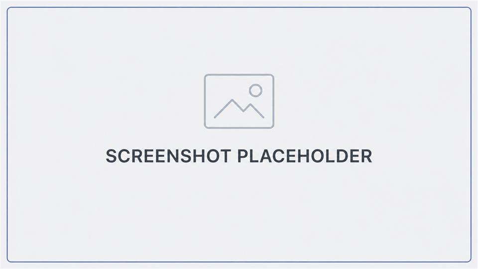
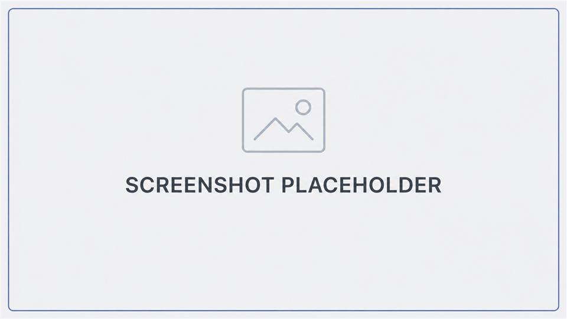
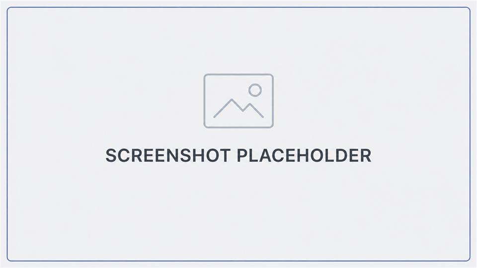
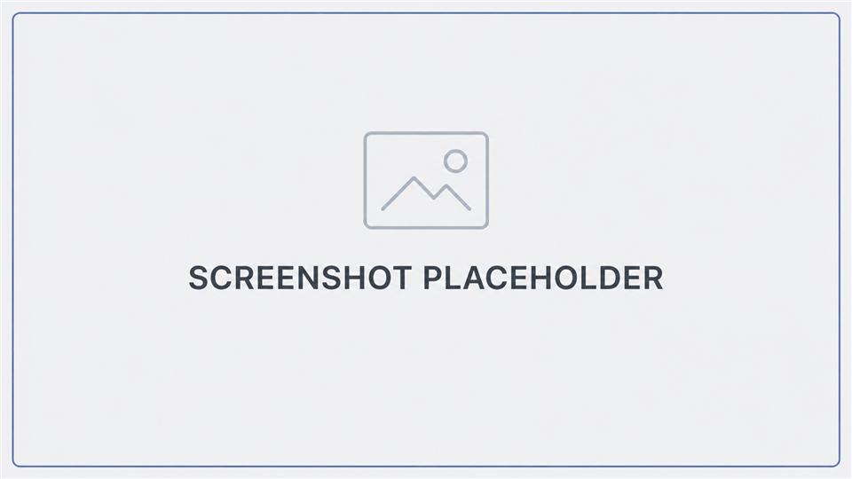

API tool
Pro feature: API Explorer requires the API Tool feature in the QReports license. It is included with the applicable Pro/Premium package and can also be licensed separately. Use QRep > Settings > License Status to see the enabled features.
API Explorer builds, tests, previews, and saves API request definitions. Its return route goes through Query Tool so the API definition can use the same parameters, measures, calculated columns, and Excel output logic as other QReports sources.

Normal workflow
- Open QRep > API tool or open API Explorer from Query Tool or Canvas.
- Select an existing API definition or choose New.
- Choose a connection and enter the method, base URL, and path.
- Configure authentication, headers, query parameters, and an optional request body.
- Select Submit.
- Inspect Sent, Log, Raw, and Grid.
- Configure flattening, filtering, pagination, or looping when required.
- Save the API definition.
- Choose To Querytool to finish the Excel report definition.
Connection and request
The connection contains reusable connection-level information. The API request contains the endpoint-specific method, relative path, request values, and result handling.
| Setting | Purpose |
|---|---|
| Connection | Selects the saved connection used by the request. |
| Method | HTTP method required by the endpoint. |
| BaseURL | Connection-level service address. |
| Path | Relative endpoint path. |
| AUTH | Selects the authentication method. |
Supported authentication choices include None, API Key, Bearer Token, Authorization Token Workflow, Azure Function Key, and Basic Auth. The fields displayed below AUTH change with the selected method.
Do not include real tokens, passwords, or production URLs in screenshots or shared example workbooks. Use the connection and authentication settings approved by your organization.
Request tabs

| Tab | Use |
|---|---|
| Headers | Adds HTTP header key/value pairs. |
| Query | Adds URL query-string key/value pairs. |
| Body | Sends Raw, GraphQL, or Form URL Encoded content. |
| Settings | Controls flattening, postfilter, timeout, raw preview limit, and grid record limit. |
| Pagination | Repeats a request by next-link or offset rules. |
| Loop | Runs the request for values returned by another query. |
Body modes are None, Raw, GraphQL, and Form Url Encoded. Raw bodies support JSON, text, XML, and JavaScript content formats. GraphQL provides separate query and variables editors.
Right-click the Headers or Query grids to remove a line, clear all lines, toggle a line, add common values, or select columns discovered in a response.
Parameters in requests
QReports parameters can be used in the path, query values, headers, body, and GraphQL variables. For example:
/sales/{{pyear}}/{{region}}
Use formatted parameter output where quoting or multi-value syntax is needed. Review the submitted request in Sent and avoid logging secrets. See Parameters.
Submit and inspect the response
Select Submit to execute the current request.

| Response tab | What it shows |
|---|---|
| Sent | The request representation sent by the tool. |
| Log | Status, processing, pagination, and row information. |
| Raw | The returned response body before tabular conversion. |
| Grid | Rows and columns produced from the response. |
When a successful response produces no displayable table rows, API Explorer selects Raw so messages, scalar responses, error details, or unexpected JSON shapes remain visible. Show table reruns the table conversion using the current flattening settings.
Flattening and postfilter
APIs often return nested objects or arrays. Flattening selects the array that represents records and expands properties into columns. Use Flattening help to inspect the response and choose a path rather than guessing it.
Settings include:
- preferred array property, often
value; - flattening paths and selected result columns;
- postfilter applied after the response has been converted;
- API record limit for the Grid preview;
- Raw preview limit;
- request timeout.
Always verify the Raw response when expected fields are missing from Grid. The API may have changed its wrapper or nesting even though the request itself succeeded.
Pagination
Enable pagination when one request returns only part of the available data.
| Type | Use |
|---|---|
| Next link | Reads the next request URL or token from a response property. |
| Offset | Advances offset/limit values until the stop condition or maximum page count is reached. |
Configure the data property containing rows, start offset, page size, maximum pages, and optional page-number output column. Set conservative limits while testing.
Loop requests
Loop mode runs the API request once for each value returned by a source query. The loop query can be built through Query Tool and can supply tokens used in the path, query parameters, headers, body, or GraphQL variables.
Loop settings include connection, source query, value column, token name, maximum requests, delay, empty-value handling, and optional loop value/index columns. Pagination is applied inside each loop request.
Start with a small maximum request count. Confirm the API's rate limits and acceptable-use rules before running a large loop.
Save and manage definitions
- Save stores the current named API definition.
- Api definitions opens the manager where definitions can be loaded, renamed, duplicated, or deleted.
- Export to postman file and Import postman file exchange supported request definitions with Postman-format files.
- New clears the editor for a new request.
Return through Query Tool
Choose To Querytool after the response structure is correct.

Query Tool receives the API JSON definition, endpoint path, and preview table. From there you can:
- inspect and rename columns;
- add QReports parameters;
- add Mini DAX measures or calculated columns;
- choose the Excel output type;
- return or patch the definition into the active worksheet.
If the existing Excel definition contains measures and the API result does not provide replacements, Query Tool preserves the stored measure definition and displays a warning. This prevents an API edit from silently deleting existing report measures.
Continue with Query Tool, Parameters, or Mini DAX and measures.